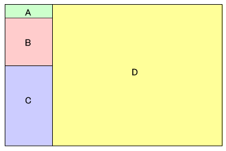

本リファレンスマニュアルは NITRO や TWL 向けのアプリケーション開発者向けに TWL-SDK の関数について説明するものです。NITRO や TWL のプラットフォーム自体の説明は含まれていません。
TWL-SDK のリファレンスページは4つのフレームで構成されています。フレーム表示に対応していないブラウザではリファレンスマニュアルを参照することが出来ません。

各フレームは大まかに以下のような役割となっています。
フレームA にはトップに戻るリンクや、関数一覧のためのリンクが表示されます。
フレームB にはライブラリのカテゴリごとのリンクが表示されます。
フレームC には各ライブラリをさらに機能別で分類したリストが表示されます。
フレームD には関数の一覧や、関数の説明などが表示されます。
) と TWL アイコン() について関数リストや関数説明の項目名に付けられている や のアイコンは以下の意味を持ちます。
このアイコンだけがあるページは、NITRO 専用 ROM を開発する場合や、NITRO/TWL
両対応の HYBRID ROM を開発する場合に関係する項目です。TWL 専用ROM を開発する際には参照する必要はありません。
このアイコンだけがあるページは、TWL 用の ROM を開発する場合や、NITRO/TWL
両対応の HYBRID ROM を開発する場合に関係する項目です。NITRO 専用 ROM を開発する際には参照する必要はありません。NITRO
モードで返り値が得られる関数であっても TWL アイコンだけが付いている場合もあります。
このように両方のアイコンがあるページは、開発するROMの種類やプラットフォームに関係なく参照すべき項目です。
2008/10/07 初版